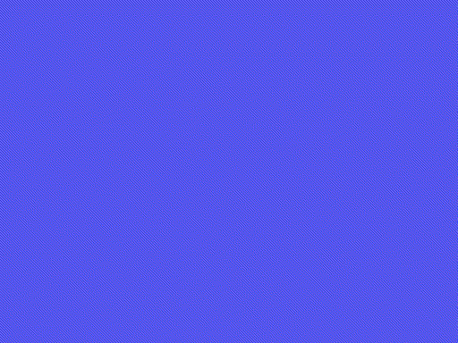

The sequences
The still screens are rebuilt from the ROM's bytes and identical, pixel for pixel, to openMSX's VRAM at that moment. The animations are the VRAM and VDP registers of every openMSX frame, painted the way the TMS9918 paints them (tools/anima.py), one frame in three.
The intro

The whole intro, 32 seconds: the Konami logo on blue, the title with the menu (1PLAYER, EXCHANGE and DUALPLAY), THE SAGA CONTINUES, KONAMI PRESENTS and the title building up.
If nothing is pressed, the story follows (105 seconds): EMERGENCY, the warning from Latis, ZELOS-FORCE surrounding the planet, the two ships with their pilots and «CAN THEY RESCUE PLANET LATIS?», and the title again with «THE FANTASTIC SPACE ADVENTURE COMMENCES». Then the demo starts.

The still screens, each identical to the VRAM: Konami, the title, THE SAGA CONTINUES, KONAMI PRESENTS and the title on its own.


The two endings
The ending comes when boss 6 falls (p11:B58D). With Nemesis 2 in the other slot and 0xE30A set, it is the good one (p10:8F7F); otherwise, the other one.

The good ending: «CONGRATURATION! YOU ARE GREAT STAR FIGHTER».
Before it come «ZELOS FORCE HAS DISAPPEARED!!» and «...PEACE WILL RETURN TO LATIS AGAIN!!».

The other ending: VENOM shows up.
The CRUSH BLOW fails, VENOM shows up («HE DIED ONCE, BUT HE IS NOW REINCARNATED!!») and «THE CRUSH BLOW OPERATION TURNED OUT TO BE A FAILURE AFTER ALL». Both end with THE END and EXTEND PLAY? Y/N.
| Ending | 1 | 2 | 3 | 4 | 5 |
|---|---|---|---|---|---|
| Good | ZELOS FORCE | PEACE | the pilot | ||
| The other | WHAT IS HAPPENED!? | VENOM | FAILURE | GO FOR THE FIGHT!! | THE END |


The screens of each ending, in order.